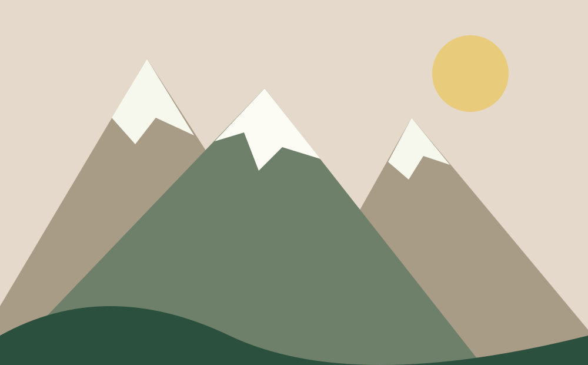

Grey Tor
An invented high ridge with three elevation samples.
View Grey Tor sample forecastFICTIONAL SAMPLE DATA · Static research demonstration · No live forecasts or warnings · Do not use for planning
A different view of the forecast
Explore how a mountain forecast changes with elevation, using fixed fictional peaks and conditions.
Explore Grey TorLocal samples only; try the names listed below. No location is detected.
Search needs JavaScript; use the sample links below instead.
Try Grey Tor, Ash Peak or Cedar Ridge. None represents a real route or current conditions.
An invented high ridge with three elevation samples.
View Grey Tor sample forecast
A fictional summit in the same sample region.
View Ash Peak sample forecastAn imagined lower ridge and valley setting.
View Cedar Ridge sample forecastInspect an original schematic with contour and road overlays. It is not a geographic map.
Open map demonstrationOriginal sample notes and mountain illustrations demonstrate the community regions observed on the source.
Read fictional notesA forecast matrix groups temperature, wind and precipitation by period. The elevation selector changes local samples; no inference about real mountain weather is possible.
Source app/account affordances are outside this local scope. No app download, login, favorites or subscription is offered.